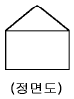
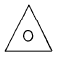
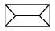
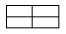
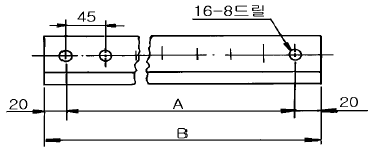

제선기능사 (2001-04-29 기출문제)
1과목: 금속재료일반
1. 도면에 치수숫자와 같이 사용하는 기호 중 45° 모따기를 나타내는 것은?
- P
- C
- R
- t
(정답률: 95%)

2. 가공한 재료를 고온으로 가열시 일어나는 현상의 단계가 바르게 된것은?
- 재결정-회복-결정성장
- 회복-결정성장-재결정
- 결정성장-재결정-회복
- 회복-재결정-결정성장
(정답률: 65%)
3. 정투상법에서 물체의 특징을 가장 잘 나타내는 면은 어느 투상도로 하는가?
- 평면도
- 정면도
- 우측면도
- 좌측면도
(정답률: 91%)
4. 스치거나 문질러서 벗겨진 상해는?
- 찰과상
- 절상
- 부종
- 자상
(정답률: 92%)
5. 도면에서 구멍의 지름치수가 ø50H7 로 기입되었을 때 H7의 7 이 갖는 뜻은?
- 구멍수가 7개
- 허용치수가 7 mm
- IT 공차등급 7급
- 구멍 깊이가 7 mm
(정답률: 70%)
6. 소결작업에서 소결원료가 미세(粉) 해지면 어떻게 되겠는가?
- 통기성이 나빠진다.
- 소결 생산성이 향상된다.
- 석회석의 분해가 활발해진다.
- 소결온도가 급상승한다.
(정답률: 66%)
7. 소결광 중 FeO 성분이 목표치보다 낮을 경우, 어느 원료를 사용하여야 하는가?
- 적철광
- 석회석
- 밀스케일(mill scale)
- 사문암
(정답률: 59%)
8. 일반적으로 선철에서 철 이외의 5대 원소는?
- 크롬, 몰리브덴, 니켈, 탄소, 텅스텐
- 질소, 탄소, 붕소, 헬륨, 수소
- 탄소, 황, 망간, 인, 규소
- 주석, 납, 카드뮴, 은, 아연
(정답률: 83%)
9. 금속의 비열이란?
- 1g의 물질의 온도를 1℃높이는데 필요한 열량
- 1㎏의 물질의 온도를 1℃높이는데 필요한 열 량
- 금속 1g을 융해시키는데 필요한 열량
- 금속 1㎏을 융해시키는데 필요한 열량
(정답률: 76%)
10. 소성가공한 금속재료를 고온으로 가열할 때 일어나는 현상이 아닌것은?
- 내부 응력제거
- 재결정
- 경도의 증가
- 결정입자의 성장
(정답률: 60%)
11. 고로 장입장치 중 상부장입종과 하부장입종을 설치한 이유는?
- 용해온도 상승
- 출선시간 증가
- 노내가스 차단
- 조업시간 연장
(정답률: 72%)
12. 팔레트 대차와 가장 거리가 먼 것은?
- 사이드 플레이트
- 화격자
- 스프로킷 휠
- 스크린
(정답률: 78%)
13. 그림과 같은 정면도의 평면도는?




(정답률: 91%)
14. 큰 도면을 접어서 보관할 경우에 기준이 되는 크기는?
- A2
- A3
- A4
- A5
(정답률: 85%)
15. 열풍로의 축열실 내화벽돌의 조건으로 맞는 것은?
- 열전도율이 좋아야 한다.
- 비열이 낮아야 한다.
- 기공율이 30% 이상이어야 한다.
- 비중이 5.0 이상이고 점토질을 사용하지 않는다.
(정답률: 70%)
2과목: 금속제도
16. 고로의 장입물에 속하지 않는 것은?
- 철광석
- 보크사이트
- 석회석
- 코크스
(정답률: 81%)
17. 공을 비스듬히 절단하였을 때 단면의 형상은?
- 타원형
- 원형
- 부채꼴형
- 포물선형
(정답률: 68%)
18. 벨트 컨베이어의 연결법이 아닌 것은?
- 트리퍼 연결
- 슈트 연결
- 염자식 연결
- 피더컨베이어 연결
(정답률: 64%)
19. 수나사의 바깥 지름이나 암나사의 안지름은 어느 선으로 나타내는가?
- 가는 실선
- 굵은 실선
- 가는 일점 쇄선
- 가는 이점 쇄선
(정답률: 70%)
20. 면심입방격자의 표시는?
- FCC
- LPG
- CCP
- CDP
(정답률: 92%)
21. 주석청동에 Pb를 3.0 - 26 % 첨가한 것은?
- 연청동
- 규소청동
- 인청동
- 알루미늄청동
(정답률: 69%)
22. 알루미늄의 재결정 온도(℃)는?
- 약 180
- 약 450
- 약 600
- 약 800
(정답률: 52%)
23. 소결광의 낙하강도 지수(SI)를 구하는 시험방법으로 옳은 것은?
- 2[m] 높이에서 4회 낙하시킨 후 잔존+10[mm]의 중량[%]이다.
- 2[m] 높이에서 4회 낙하시킨 후 잔존-10[mm]의 중량[%]이다.
- 2[m] 높이에서 2회 낙하시킨 후 잔존+10[mm]의 중량[%]이다.
- 2[m] 높이에서 2회 낙하시킨 후 잔존-10[mm]의 중량[%]이다.
(정답률: 78%)
24. 보통 주철에서 흑연이 어떤 모양일 때 강도를 가장 해치게 되는가?
- 커다란 편상흑연
- 작은 편상흑연
- 둥근 구상흑연
- 미세한 편상흑연
(정답률: 72%)
25. 텅스텐의 원소 기호는?
- W
- V
- P
- N
(정답률: 91%)
26. 확산형의 소결에 주가 되는 성분은?
- FeO
- SiO
- CaCO
- MgSO
(정답률: 61%)
27. 고급 주철의 인장강도(kgf/mm2)는 얼마 정도인가?
- 0 - 5
- 5 - 10
- 10 - 15
- 30 이상
(정답률: 53%)
28. 제선설비가 아닌 것은?
- 열풍관
- 풍구
- 스키머
- 균열로
(정답률: 56%)
29. 고로용 코크스는 어느 것을 건류하여 제조하는가?
- 역청탄
- 갈탄
- 능철강
- 약점결탄
(정답률: 53%)
30. 주물용선에 속하는 것은?
- 고규소선
- 베세머선철
- 산성평로선철
- 염기성전로용선
(정답률: 53%)
3과목: 제선법
31. 고로의 노상에 사용되는 벽돌로서 부상되기 쉬운 것은?
- 탄소벽돌
- 알루미나벽돌
- 크롬벽돌
- 실리카벽돌
(정답률: 58%)
32. 소결원료를 혼합하는 혼합기 중 원통 회전형 내에 블레이드가 달려 있어 블레이드 부분에서 원료의 혼합이 이루어지는 것은?
- 퍼그 밀
- 드럼 믹서
- 패들 드럼 믹서
- 패들 믹서
(정답률: 78%)
33. 산·알칼리 등에 우수한 내식성을 가지고 있으며 전열기 부품, 열전쌍보호관, 진공관필라멘트에 사용되는 니켈크롬 합금은?
- 실루민
- 화이트메탈
- 인청동
- 인코넬
(정답률: 59%)
34. 재료기호 중에서 탄소 단강품을 나타내는 것은?
- BrC3
- SF
- SM
- SCP
(정답률: 56%)
35. 고로 조업의 특징이 아닌 것은?
- 연속조업
- 선철과 슬랙의 비중에 의한 분리
- 철분 회수율 양호
- 탄소의 산화제 역활
(정답률: 57%)
36. 코크스제조에서 사용되지 않는 것은?
- 머드건
- 균열강도
- 텀블러지수
- 낙하시험
(정답률: 72%)
37. 팔레트 속도가 빠를 때 조업에 미치는 직접적인 영향은?
- 급광량 증가
- 편석도 증대
- 층후의 열교환 저하
- 원료 중 생석회의 감소
(정답률: 47%)
38. 용광로 출선구 성형 작업시 옳지 못한 것은?
- 출선구에서 고로가스 분출 및 심한 고열이 다량 발생하므로 출선구 후드(hood)를 닫는다.
- 출선구를 살수하여 소화 냉각한다.
- 출선구 앞 대탕도에 족장판을 설치한다.
- 공기 마스크를 착용한다.
(정답률: 59%)
39. 재결정 온도가 가장 높은 금속은?
- Aℓ
- Mg
- W
- Pb
(정답률: 82%)
40. 고로의 실효높이를 나타내는 것은?
- 노저로 부터 바람구멍까지의 높이
- 출선구로부터 장입기준선 까지의 높이
- 바람구멍 중심선으로 부터 장입 기준선 까지의 높이
- 출재구로 부터 장입 기준선 까지의 높이
(정답률: 55%)
41. 미분의 적철광을 소결했을 때의 현상 중 옳은 것은?
- 강도는 높고 소결이 균일하며 실수율도 높아 진다.
- 강도는 저하하고 소결이 불균일하며 실수율도 낮아진다.
- 강도는 저하하고 소결은 균일하며 실수율은 높아진다
- 강도는 높고 소결은 불균일하여 실수율은 낮아 진다.
(정답률: 50%)
42. 상부광이 사용되는 목적 중 적당치 않는 것은?
- 화격자 면의 통기성을 양호하게 유지한다.
- 화격자 공간으로 원료가 낙하하는 것을 방지하고 분광의 공간 메움을 방지한다.
- 용융상태의 소결광이 화격자에 접착되지 않게 한다.
- 화격자가 고온이 되도록 한다.
(정답률: 68%)
43. 내부 응력이 있는 결정입자중에서 내부응력이 없는 새로운 결정핵이 생겨 그 핵에서 새로운 결정입자가 생기는 것은?
- 연화
- 히스테리시스
- 회복
- 재결정
(정답률: 81%)
44. 청동의 주성분은?
- 구리 - 주석
- 구리 - 아연
- 주석 - 납
- 알루미늄 - 크롬
(정답률: 77%)
45. 소결연료로 사용되는 분코크스의 입도는 통상 배합원료 평균 입도의 몇 배가 좋은가?
- 0.3-0.5배
- 0.8배
- 0.4배
- 0.6배
(정답률: 56%)
4과목: 소결법
46. 가상선으로 표시하는 경우가 아닌 것은?
- 부분 생략, 부분 단면의 경계를 나타내는 경우
- 인접 부분을 참고로 나타내는 경우
- 가공 전 또는 후의 모양을 나타내는 경우
- 물체의 운동 범위를 나타내는 경우
(정답률: 62%)
47. 기중기, 호이스트 등의 감아올리기 장치에서 일정한 한계를 벗어나 감아올리는 일이 없도록 자동적으로 동력을 차단시켜주는 전기적 안전장치는?
- 리밋 스위치(limit switch)
- 래칫장치
- 모멘트 리미트(moment limit)
- 정격방지 장치
(정답률: 71%)
48. 고압가스 설비에 부착된 단위시설(장치)중 안전장치에 속하지 않는 것은?
- 계량기
- 파열판(박판)
- 가용전
- 릴리프 밸브(Relidf Valve)
(정답률: 63%)
49. 척도가 1 : 2 인 도면에서 실제 치수 20mm 인 선은 도면상에 몇 mm 로 긋는가?
- 5 mm
- 10 mm
- 20 mm
- 40 mm
(정답률: 82%)
50. 제강용선과 비교한 주물용선의 특징으로 맞는 것은?
- 황이 높다.
- 고염기도 슬랙이다.
- 규소가 낮다.
- 망간이 낮다.
(정답률: 44%)
51. 철광석 중의 다음 성분 중 소결과정에서 제거하기 쉬운 원소는?
- S
- Pb
- K
- Zn
(정답률: 70%)
52. A3 도면 용지의 크기(mm)는?
- 594 × 841
- 420 × 594
- 297 × 420
- 210 × 297
(정답률: 78%)
53. 고로가스 청정장치 중 건식 청정기는?
- 로타리식 청정기
- 배치식 청정기
- 스탭 청정기
- 여과식 가스 청정기
(정답률: 88%)
54. 단면적이 10mm2 인 환봉에 5000 ㎏f의 외력이 작용할 때 재료 내부에 생기는 응력(kgf/mm2)은?
- 250
- 300
- 500
- 1000
(정답률: 81%)
55. 소결설비 중 수분을 첨가시키는 설비는?
- 테이블 절출장치
- 드럼 혼화기
- 셔틀 콘베이어
- 드럼 피더
(정답률: 55%)
56. 고로의 노내반응은?
- 황화반응
- 산화반응
- 탈탄반응
- 환원반응
(정답률: 74%)
57. 코크스비에 해당하는 것은?
- 코크스 장입량 (㎏)/선철 생산량(T)
- 선철 생산량 (T/D)/코크스 장입량(T/D)
- 코크스장입량 (T/D)/노 내용적(Nm3)
- 코크스중 탄소량(%)/코크스 장입량(kg)
(정답률: 52%)
58. 아래 도형에서 A 의 치수는 얼마인가?

- 315
- 720
- 675
- 360
(정답률: 63%)
59. 소결과정의 가장 중요한 원리는?
- 조업 용이도
- 소성의 신속화
- 열이동과 충분한 열공급
- 생산성과 원단위
(정답률: 64%)
60. 소결과정 중 환원반응이 일어나는 온도는?
- 200-400℃
- 600-800℃
- 900-1200℃
- 1300-1500℃
(정답률: 65%)